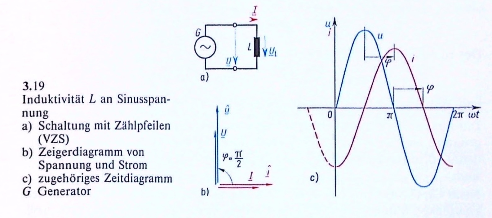
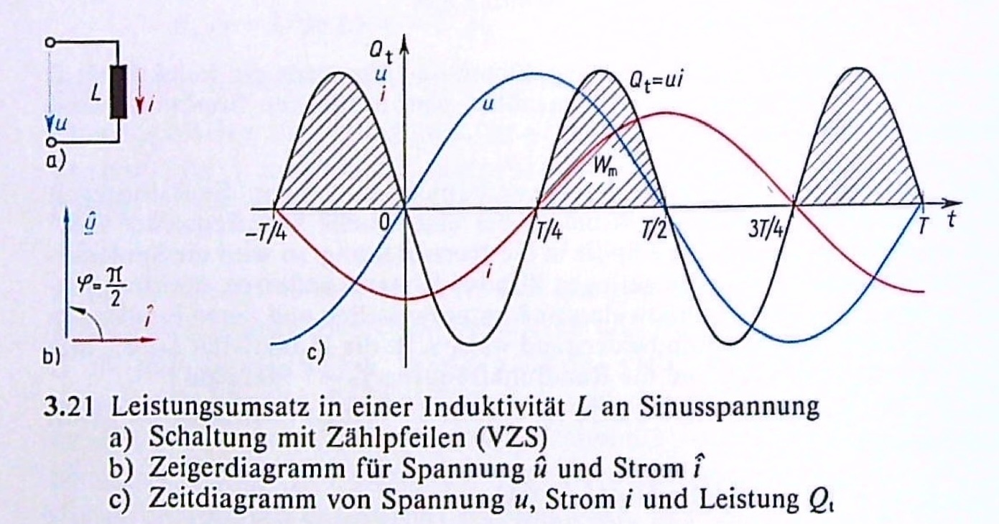
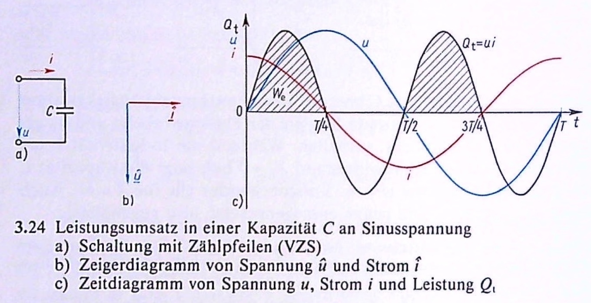
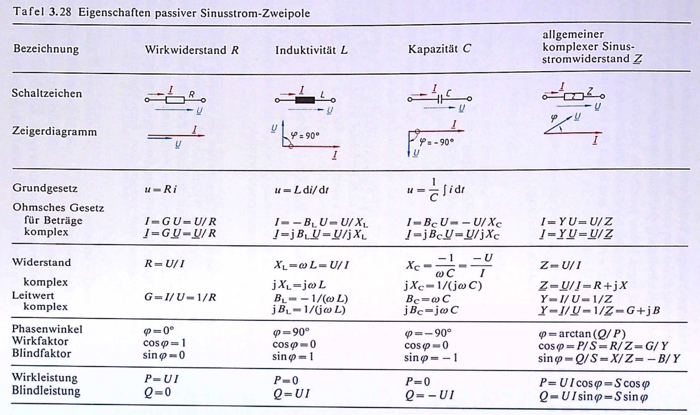
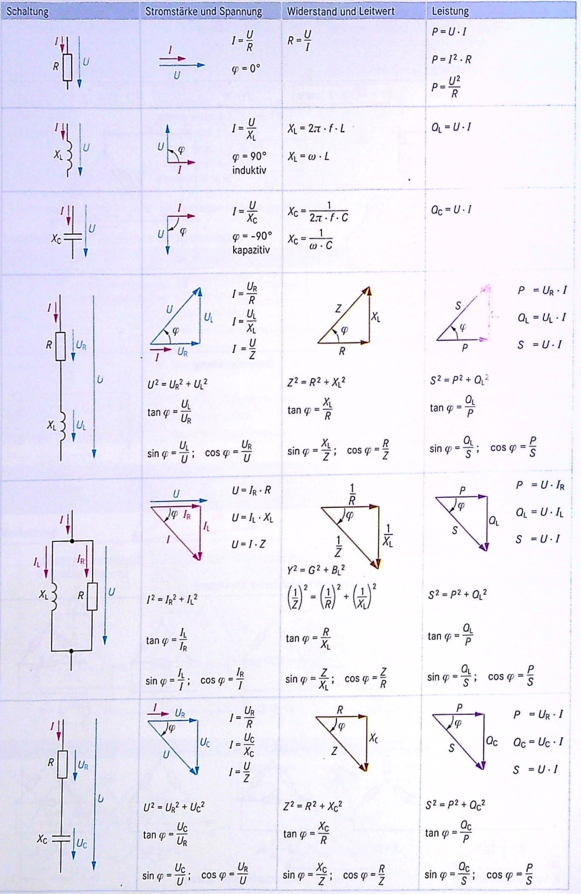
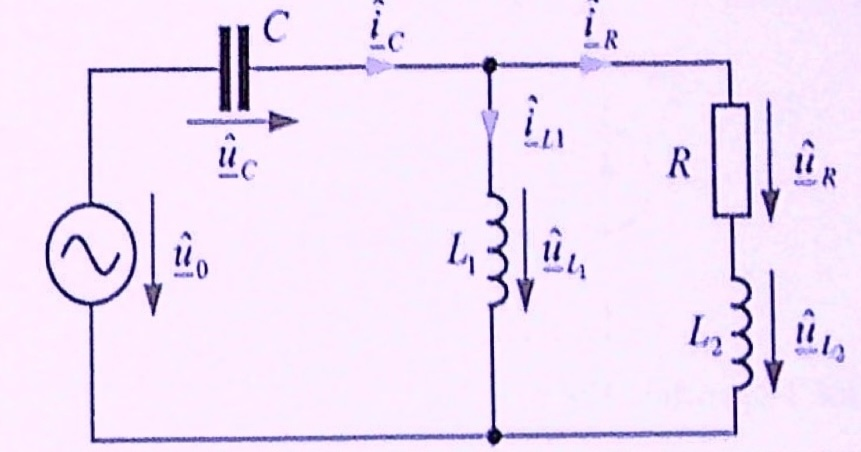
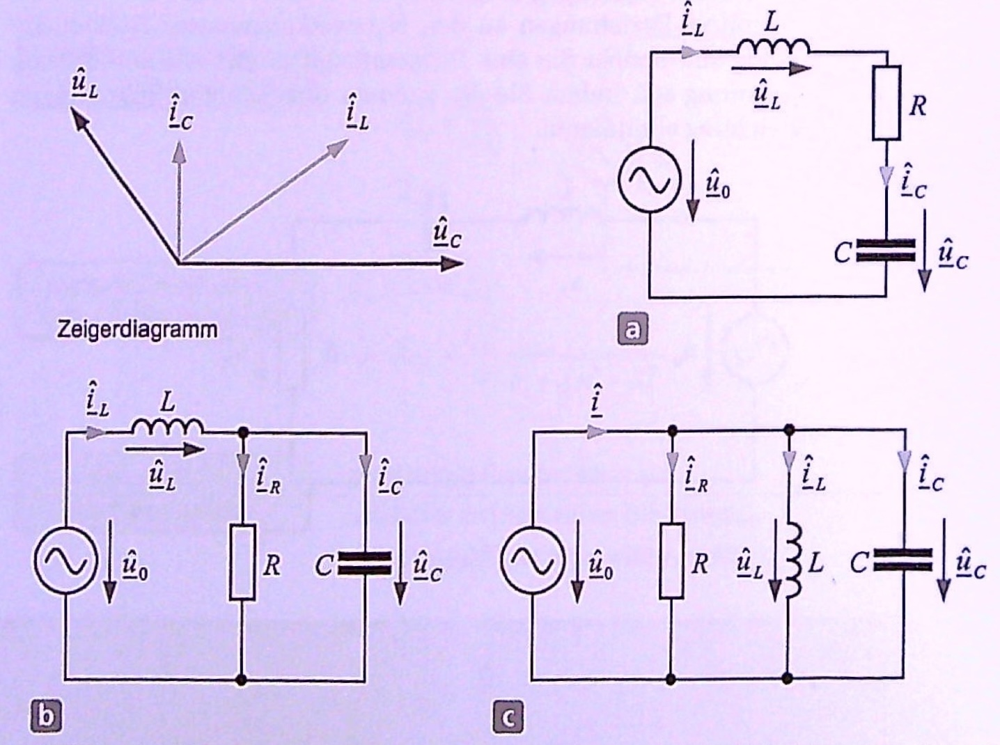
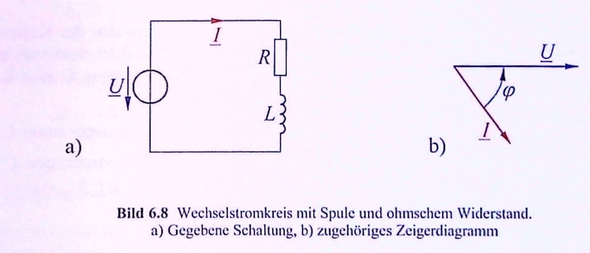

21 Verhalten der Grundzweipole 2
- Induktivität
- Spannung, Strom, Phasenwinkel
- Induktiver Blindwiderstand
- Induktive Blindleistung
- Kapazitive Blindleistung
- Kapazität und Induktivität im Vergleich
21.1 Induktivität
Es wird hier eine reine Induktivität betrachtet, es werden also nur die Einflüsse des magnetischen Feldes berücksichtigt. Vernachlässigt werden die Wirkungen des elektrostatischen Feldes und der Leiterwiderstand.
21.1.1 Spannung, Strom und Phasenwinkel
An einer Induktivität gilt die Beziehung zwischen Spannung und Strom:
\[ u_L = L \frac{di}{dt} \]
Setzt man für den Strom die Gleichung
\[ i = - \hat{i} \cos(\omega t) = \hat{i} \sin(\omega t - \frac{\pi}{2}) \]
ein, erhält man für den Verlauf der Spannung:
\[ u = L \frac{di}{dt} = -L \hat{i} \frac{d(\cos(\omega t)}{dt} = \omega L \hat{i} \sin(\omega t) = \hat{u} \sin(\omega t) \]

Entn. aus (Fricke und Vaske 1982)
In komplexer Schreibweise erhält man:
\[ \underline{u} = L \frac{d\underline{i}}{dt} = L \hat{i} \frac{d(e^{j \omega t})}{dt} = j \omega L \hat{i} e^{j \omega t} = j \omega L \underline{i} \]
Strom und Spannung zeigen eine Phasenverschiebung von \(\pi/2 = 90°\). Die Spannung eilt den Strom um den Phasenwinkel \(\varphi = \pi/2 = 90°\) vor.
Bei der Induktivität kommt der Strom zu spät!
21.1.2 Induktiver Blindwiderstand
Setzt man den Scheitelwert von Strom und Spannung ins Verhältnis erhält man:
\[\frac{\hat{u}}{\hat{i}} = \frac{U}{I} = \omega L = X_L\]
Den Widerstand bezeichnet man als induktiven Blindwiderstand.
Komplex dargestellt:
\[ \frac{\underline{u}}{\underline{i}} = \frac{\underline{\hat{u}}}{\underline{\hat{i}}} = \frac{\underline{U}}{\underline{I}} = j \omega L = j X_L = \frac{1}{j B_L} \]
Der induktive Blindleitwert nimmt daher negative Werte an:
\[B_L = -\frac{1}{\omega L} = - \frac{1}{X_L}\]
21.1.3 Induktive Blindleistung

Entn. aus (Fricke und Vaske 1982)
Die Leistung an einer Induktivität schwingt zwar, wie beim Wirkwiderstand mit doppelter Frequenz, aber wechselt immer zwischen positiv und negativ. Sie nimmt damit während einer Spannungs-Viertelperiode Energie auf und baut ein magnetischen Feld auf. Während der nächsten Spannungs-Viertelperiode wird das Magnetfeld unter Energieabgabe wieder abgebaut.
Die mittlere Leistung, also die Wirkleistung, ist somit \(P = 0\). Man nimmt daher auch zur Bezeichnung der Blindleistung den Formelbuchstaben P, sondern das Q. Es wird keine elektrische Energie in Wärme oder mechanische Leistung umgewandelt, deshalb nennt man es Blindleistung.
\[Q = U I = I^2 X_L = -U^2 B_L\]
21.2 Kapazitive Blindleistung

Entn. aus (Fricke und Vaske 1982)
Analog zur induktiven Blindleistung ist auch die kapazitive Blindleistung mit der doppelten Frequenz am schwingen und hat die mittlere Leistung, also Wirkleistung, \(P = 0\). Die Energie kommt hier aus dem Auf- und Abbau elektrischer Felder.
Im Vergleich zwischen kapazitiver und induktiver Blindleistung stellt man fest, dass diese um 180° versetzt zueinander schwingen. Man setzt daher die kapazitive Blindleistung negativ an.
\[Q = - U I = -U^2 B_C = I^2 X_C\]
21.3 Allgemeiner passiver Sinusstrom-Zweipol
21.3.1 Scheinwiderstand und Scheinleitwert
In einem Zweipol können Wirkwiderstände, Kapazitäten, Induktivitäten oder Kombinatationen daraus enthalten sein. Man nennt einen Widerstand, der aus Wirkwiderstände, Kapazitäten, Induktivitäten oder aus Kombinationen bestehen kann, einen Scheinwiderstand.
\[Z = \frac{U}{I} = \frac{\hat{u}}{\hat{i}}\]
Daneben gibt es auch den Scheinleitwert:
\[Y = \frac{1}{Z} = \frac{I}{U} = \frac{\hat{i}}{\hat{u}}\]
oder komplex dargestellt:
\[ \underline{Z} = \frac{\underline{u}}{\underline{i}} = \frac{\underline{\hat{u}}}{\underline{\hat{i}}} = \frac{\underline{U}}{\underline{I}} = Z \angle \varphi = R + jX \]
komplexer Leitwert:
\[ \underline{Y} = \frac{\underline{I}}{\underline{U}} = Y \angle \varphi_Y = \frac{1}{Z} \angle (-\varphi) = G + jB \]

Entn. aus (Fricke und Vaske 1982)
21.3.2 Leistungen
Zeitwert der Leistung:
\[ S_t = u i = \hat{u} \hat{i} \cdot \sin(\omega t) \cdot \sin(\omega t + \varphi) = \frac{\hat{u} \hat{i}}{2} (\cos(\varphi) - \cos(2 \omega t + \varphi)) = UI \cos(\varphi) - UI \cos(2 \omega t + \varphi) \]
\[S = U I = I^2 Z = \frac{U^2}{Z}\]
Es wird also im Zeitwert ein konstanter Leistungswert \(S \cos(\varphi)\) von einer Leistungsschwingung \(S \cos(2 \omega t + \varphi)\) überlagert.
Mittelwert oder Wirkleistung:
\[P = S \cdot \cos(\varphi) = U I \cdot \cos(\varphi)\]
Das Verhältnis der Wirkleistung zur Scheinleistung wird als Leistungsfaktor oder auch Wirkfaktor bezeichent.
\[\lambda = \cos(\varphi) = \frac{P}{S}\]
Scheinleistung kann aus Wirk- und Blindleistung bestehen. Die Blindleistung kann man über diese Formel berechnen:
\[Q = U I \cdot \sin(\varphi) = S \cdot \sin(\varphi)\]
Der Blindfaktor ist das Verhältnis von Blindleistung zu Scheinleistung:
\[\beta = \sin(\varphi) = \frac{Q}{S}\]
Um die Leistungen voneinander unterscheiden zu können, werden ihre Einheiten etwas umformuliert. Die Basis bildet das Watt (W). Dies bekommt die Wirkleistung, da diese bereits aus der Gleichstromtechnik so bekannt war. Die Scheinleistung wird mit VA (Volt-Ampere) gekennzeichent und die Blindleistung mit var (Volt-Ampere-Reaktiv). Hier ist auch Groß- und Kleinschreibung zu achten.
Man kann die Leistung auch komplex darstellen:
\[\underline{S} = S \angle \varphi = U I \angle \varphi = P + jQ\]
Um die komplexe Leistung direkt aus dem komplexen Strom und der komplexen Spannung zu berechnen, muss man den konjugiert-komplexen Strom nehmen.
\[ \underline{S} = \underline{U} \underline{I}^* = U \angle \varphi_U \cdot I \angle (-\varphi_I) = U I \angle (\varphi_U - \varphi_I) = U I \angle \varphi = S \angle \varphi = P + jQ \]
21.3.3 Begriffe
| Deutsch | aus dem Lateinischen |
|---|---|
| Scheinwiderstand | Impedanz |
| Scheinleitwert | Admittanz |
| Wirkwiderstand | Resistanz |
| Wirkleitwert | Konduktanz |
| Blindwiderstand | Reaktanz |
| Blindleitwert | Suszeptanz |
| induktiver Blindwiderstand | Induktanz (auch Reaktanz) |
| kapazitiver Blindwiderstand | Kondensat oder Kapazitanz |
21.3.4 Übersichten

Entn. aus (Fricke und Vaske 1982)

Entn. aus (Dzieia u. a. 2016)

Entn. aus (Dzieia u. a. 2016)
21.4 Übungen
21.4.1 Übung 6.1
(Vaske/Fricke Beispiel 3.13)
An eine Spule mit vernachlässigbar kleinem Wirkwiderstand \(R\) wird die Sinusspannung \(U = 125\,V\) mit der Frequenz \(f = 40\,Hz\) gelegt. Der Strommesser zeigt den Sinusstrom \(I = 10\,A\) an. Welche Induktivität \(L\) hat die Spule?
\[L = \frac{U}{I \omega} = \frac{125\,V}{10\,A \cdot 2 \pi \cdot 40Hz} = 49,73\,mH\]
21.4.2 Übung 6.2
(Vaske/Fricke Beispiel 3.21)
Ein Verbraucher nimmt bei der Sinusspannung \(U = 220\,V\) den Strom \(I = 10\,A\) und die Leistung \(P = 1500\,W\) auf. Wie groß sind Scheinleistung S, Wirkfaktor \(\cos(\varphi)\), Blindfaktor \(\sin(\varphi)\), Blindleistung \(Q\) und Scheinwiderstand \(Z\)?
\[S = U I = 220\,V \cdot 10\,A = 2200\,VA\]
\[\lambda = \cos(\varphi) = \frac{P}{S} = \frac{1500\,W}{2200\,VA} = 0,6818\]
\[\varphi = 47,01°\]
\[\sin(|\varphi|) = 0,7315\]
\[|Q| = S \cdot \sin(|\varphi|) = 2200\,VA \cdot 0,7315 = 1609,3\,var\]
\[Z = \frac{U}{I} = \frac{220\,V}{10\,A} = 22\,\Omega\]
21.4.3 Übung 6.3
Albach/Fischer Aufgabensammlung Kap. 8.1, 4. Aufgabe, (Albach und Fischer 2020)
Das in der Abbildung gezeigte Netzwerk wird von einer harmonischen Spannung \(\underline{\hat{u}}_0 = \hat{u}_0 e^{j 0}\) erregt. Zeichnen Sie je ein Ersatzschaltbild des gezeigten Netzwerks für \(f -> 0 Hz\) und \(f -> \infty Hz\) und berechnen Sie für beide Fälle den Strom \(\underline{\hat{i}}_R\) durch den Widerstand \(R\) in Abhängigkeit von der Quellenspannung \(\underline{\hat{u}}_0\).

Entn. aus (Albach und Fischer 2020)

Entn. aus (Albach und Fischer 2020)
In beiden Grenzfällen gilt \(\underline{\hat{i}}_R = 0\).
21.4.4 Übung 6.4
(Albach/Fischer Aufgabensammlung 8.1 8. Aufgabe)
Zu welchem der folgenden Netzwerke a bis c gehört das dargestellte Zeigerdiagramm?

Entn. aus (Albach und Fischer 2020)
In der Reihenschaltung in Abb. a gilt \(\underline{\hat{i}}_L = \underline{\hat{i}}_C\) und bei der Parallelschaltung in Abb. c gilt \(\underline{\hat{u}}_L = \underline{\hat{u}}_C\). Daher kann das Zeigerdiagramm nur zur Schaltung b gehören.
Hier ist der Strom \(\underline{\hat{i}}_R\) in Phase zur Kondensatorspannung. Wegen \(\underline{\hat{i}}_L = \underline{\hat{i}}_R + \underline{\hat{i}}_C\) muss der Spulenstrom der Kondensatorspannung voreilen, dem Kondensatorstrom aber in Übereinstimmung mit den Zeigerdiagramm nacheilen.
21.4.5 Übung 6.5
(Hagmann Aufgabe 6.8)
Eine Spule mit der Induktivität \(L = 175\,mH\) ist mit einem ohmschen Widerstand von \(R = 40\,\Omega\) in Reihe geschaltet. Die Anordnung liegt nach Bild 6.8a an einer (sinusförmigen) Wechselspannung mit dem Effektivwert \(U = 230\,V\) der Frequenz \(f = 50\,Hz\).
Wie groß ist der Effektivwert \(I\) des fließenden Stromes?
Welcher Phasenverschiebungswinkel \(\varphi\) besteht zwischen der Spannung \(\underline{U}\) und dem Strom \(\underline{I}\)?

Entn. aus (Hagmann 2019)
Blindwiderstand der Spule:
\[\omega L = 2 \pi \cdot 50\,Hz \cdot 175\,mH = 54,98\,\Omega\]
Impedanz der Schaltung (komplex):
\[\underline{Z} = R + j \omega L = (40 + j54,98)\,\Omega = 68 \Omega \angle 54°\]
\(\underline{U}\) als Bezugsgröße und reell:
\[\underline{I} = \frac{\underline{U}}{\underline{Z}} = \frac{230\,V}{68 \Omega \angle 54°} = 3,38\,A \angle (-54°)\]
21.4.6 Übung 6.6
(Hagmann Aufgabe 6.12)
Ein ohmscher Widerstand von \(R = 100\,\Omega\) und eine Spule mit der Induktivität \(L = 72\,mH\) liegen nach Bild 6.12a parallel an einer Spannungsquelle, die eine Spannung von \(U = 36\,V\) der Frequenz \(f = 400\,Hz\) liefert.
Es sind die Teilströme \(I_R\) und \(I_L\) sowie der Gesamtstrom \(I\) zu bestimmen.
Um welchen Phasenwinkel \(\varphi\) eilt der Strom \(\underline{I}\) der Spannung \(\underline{U}\) nach?

Entn. aus (Hagmann 2019)
Blindwiderstand:
\[\omega L = 2 \pi \cdot 400\,Hz \cdot 72\,mH = 181\,\Omega\]
\(\underline{U}\) als Bezugsgröße und reell:
\[\underline{I}_R = \frac{\underline{U}}{R} = \frac{36\,V}{100\,\Omega} = 360\,mA\]
\[\underline{I}_L = \frac{\underline{U}}{j \omega L} = \frac{36\,V}{j181\,\Omega} = -j 199\,mA\]
\[\underline{I} = \underline{I}_R + \underline{I}_L = (360 - j199)\,mA = 411\,mA \angle (-28,9°)\]
21.4.7 Übung 6.7
(Hagmann Aufgabe 6.13)
Ein ohmscher Widerstand von \(R_1 = 80\,\Omega\) ist nach Bild 6.13a mit einer Spule in Reihe geschaltet, die die Induktivität \(L_1 = 12\,mH\) besitzt. Die Reihenschaltung soll für die Frequenz \(f = 1\,kHz\) durch die in Bild 6.13b dargestellte Parallelschaltung ersetzt werden.
Welche Werte sind für den Widerstand \(R_2\) und die Induktivität \(L_2\) erforderlich?

Entn. aus (Hagmann 2019)
Blindwiderstand Spule (Reihe):
\[\omega L_1 = 2 \pi \cdot 1\,kHz \cdot 12\,mH = 75,4\,\Omega\]
Impedanz der Reihenschaltung:
\[\underline{Z}_1 = R_1 + j \omega L_1 = (80 + j75,4)\,\Omega\]
Admittanz:
\[\underline{Y}_1 = \frac{1}{\underline{Z}_1} = \frac{1}{(80 + j75,4)\,\Omega} = (6,62 - j6,24)\,mS\]
Admittanz der Parallelschaltung:
\[\underline{Y}_2 = \frac{1}{R_2} - j\frac{1}{\omega L_2}\]
Gleichsetzen:
\[\frac{1}{R_2} - j\frac{1}{\omega L_2} = (6,62 - j6,24)\,mS\]
Wirkwiderstand (Parallel):
\[R_2 = \frac{1}{6,62\,mS} = 151\,\Omega\]
Blindwiderstand (Parallel):
\[\omega L_2 = \frac{1}{6,24\,mS} = 160\,\Omega\]
Induktivität (Parallel):
\[L_2 = \frac{X_{L,2}}{\omega} = \frac{160\,\Omega}{2 \pi \cdot 1\,kHz} = 25,5\,mH\]